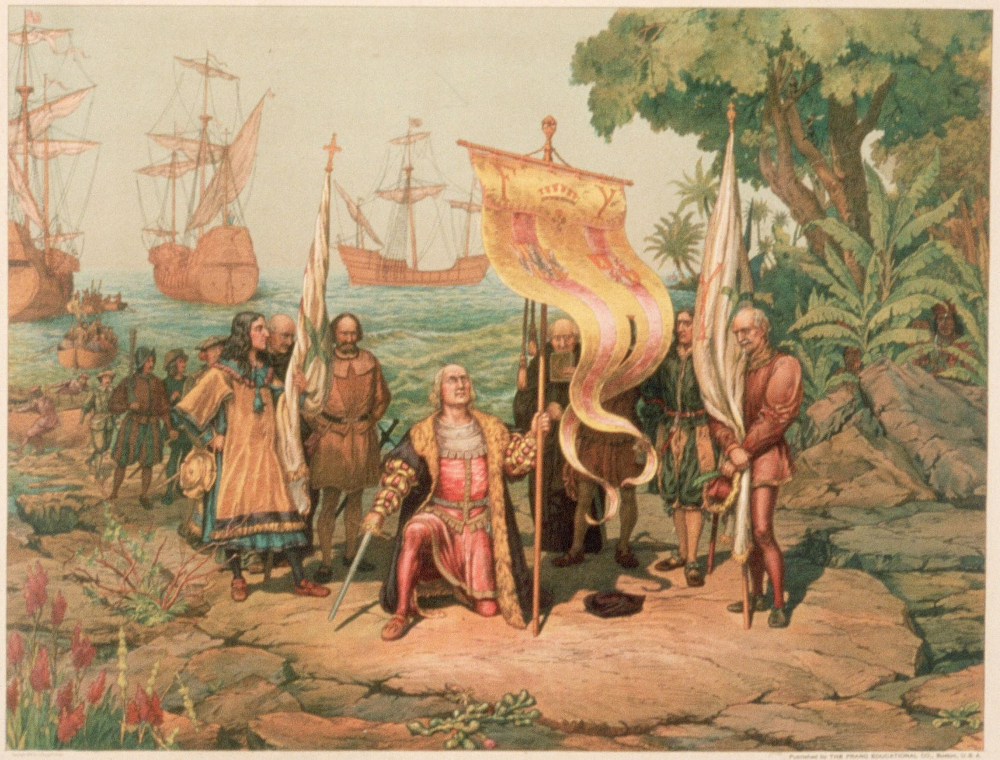
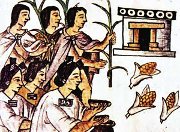
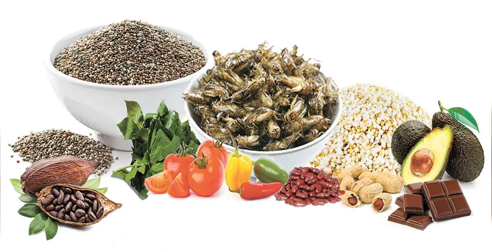

Época prehispánica.
En la época prehispánica, las culturas indígenas utilizaban ingredientes naturales como el maíz, el cacao, la miel, y diversas frutas para crear preparaciones dulces. El cacao, en particular, era muy valorado y se utilizaba tanto en bebidas como en algunas preparaciones especiales. La miel de abeja melipona (una especie nativa sin aguijón) era el principal endulzante, junto con la savia de maguey.
Influencia colonial.
Con la llegada de los españoles en el siglo XVI, se introdujeron nuevos ingredientes y técnicas europeas, como el azúcar de caña, la leche, el trigo, y las frutas europeas. Estos ingredientes se mezclaron con los ya existentes en Mesoamérica, dando lugar a nuevas preparaciones y al nacimiento de muchos dulces tradicionales. Los conventos desempeñaron un papel crucial en el desarrollo de la repostería mexicana, donde las monjas experimentaban y creaban recetas que combinaban sabores indígenas con los nuevos ingredientes.
Evolución y diversificación.
A lo largo de los siglos, los dulces mexicanos continuaron evolucionando, adaptándose a las regiones y utilizando ingredientes locales. En cada estado de México, se desarrollaron dulces típicos que reflejan la biodiversidad y la cultura de la región, desde los frutos secos y semillas en el norte, hasta el cacao y el coco en el sur.
Los mercados y las festividades también han jugado un papel importante en la preservación y popularización de estos dulces. En muchas festividades religiosas y culturales, los dulces mexicanos son protagonistas, como en el Día de los Muertos, donde se preparan y consumen una variedad de dulces que tienen un profundo significado simbólico.
